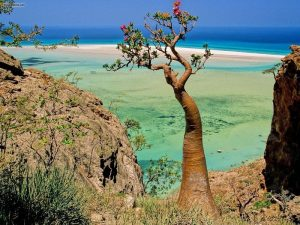

Сокотра – остров счастья
Архипелаг Сокотра состоит из четырех островов и расположен в Индийском океане, всего в 250 км от Сомали. Это одно из самых уникальных мест на земле. Ландшафт острова настолько необычен, что создается иллюзия нереальности, ведь такую красоту можно увидеть только в фильмах о неземных цивилизациях. Сокотра самое изолированное место на планете и большинство растений, которые произрастают на острове эндемичны: они не растут больше нигде на нашей планете. Даже в неземной бухте Халонг, нет такой растительности.
Оказавшись на этом острове, путешественник словно попадает в другую эру: горячий, сухой воздух, песчаные пляжи, множество пещер, горы и более семи сотен разновидностей флоры и фауны, которых не встретишь больше нигде. Сокотра переводится, как Остров Счастья. И название это оправдано: практически полная тишина и неимоверные, космические пейзажи. Сразу на память приходит вдохновение Африкой.
Только здесь можно встретить дерево Кровь Дракона, ветви которого расширяются и тянутся к небу. Снизу вы увидите большое количество летающих тарелок. Сверху дерево выглядит как гигантский гриб. Растение под названием Пустынная Роза очень похоже на цветущую ногу огромного слона.
А вот еще одно растение – Дорстения. Ему не нужна почва, его корни углубляются прямо в голые скалы. На острове проживают более 40 тысяч жителей. Но дороги были построены только два года назад. Может это и к лучшему? Это не место для любителей «Все включено». Здесь нет гостиниц и ресторанов. Это место для эко – туристов, для людей, любящих природу, для тех, кто ищет тихий и мирный уголок в этом беспокойном мире.Если вы решитесь посетить это необычное место, то, поверьте, более запоминающего путешествия у вас не будет.